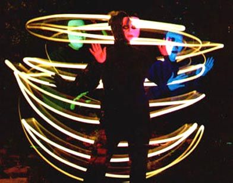

(see also Photography for photographing polymer, as well as cameras, scanning, etc., and repetition of the info below)
Photography can be
used in many ways with polymer clay as well. Any of your photographs can be used
to make "transfers" onto clay...there
are lots of ways of doing this, and some of the techniques allow them to be applied
to other surfaces as well like cardstock, metal, glass, wood, etc.
...(non-densely-saturated areas of the photos will be transparent in the final
result, or they can be made opaque, whichever you choose.)
In order to be
transferred, photographs must be handled one of several ways:
....transferred
into digital format and put in a computer by scanning,
or captured from any image on the internet or e-mail (which is otherwise
copyright free)... these will be ink jet-printed onto certain papers for
transferring with various media.
.........(slides are more of a problem but
there are devices for scanning slides into a computer... also, though you would
lose some detail, slides could also be projected onto a screen then photographed
with a digital camera to capture the image digitally).
....non-digital
images can be transferred directly such as photocopies of photos, drawings,
text, whatever (must use toner-based copiers), and also those images already available
on slick papers like photos in magazine and brochures.
...the photos
can be manipulated in various ways before transferring... and/or after transferring
and applying, they can be embellished in many ways with clay or other media
........for example, it might be fun to scan in one of your photos, then turn
it into a black and white "sketch" in the computer, or use one of the
other distortion methods available in most photoediting software; if b&w,
these could be first colored with colored pencils, etc., before transferring as
well . . or a sheet of metallic leaf could be placed behind (a transparent) transfer
image before application, etc.,etc. . . .after reducing the size of some photos,
they could be made into pages of little books or used as greeting cards . .in
other words, the possibilities are endless!
(...see
Transfers page for all the transfer methods
....many other pages
here at GlassAttic will deal with other ways to play with transfers
.......
for example, some of the framing techniques will be on
the Frames page under "Pins & Pendants"
...books & bookmarks will
be in Books,Covers ...greeting
cards in Cards.... etc.. )
...(see also Translucents-Glow-in-the-Dark
Clays for glow-in-the-dark clay info (transparent transfers can
be very cool on GITD clay), and also for info on photographing clay or other items
under black light)
You
can use your own photos as a pattern for creating clay
"paintings" and scenes
in various ways:
...polymer clay or liquid clay thinned with Diluent,
etc., can yield thin-to-thick polymer pastes and paints,
which can then be applied to clay or other canvases with brushes, fingers,
palette knives, or other tools
.... or puzzle-piece
clay images can be created fitting together pieces of flat clay (of diff. colors,
and maybe textures) into a final picture which is the same as the original photo
...or photos can be used a patterns for "bas relief"
or onlay
(.....see Paints,
and Onlay, and
Sculpting-gen > Bas Relief for more info)
...landscape and other " canes" can be
created of your own photographic images
(see Canes-instr.
> Landscapes)
...also, most? photos --at least those printed on "yearly school photo" paper-- can also be baked in an oven with polymer clay without becoming transfers, and not be damaged